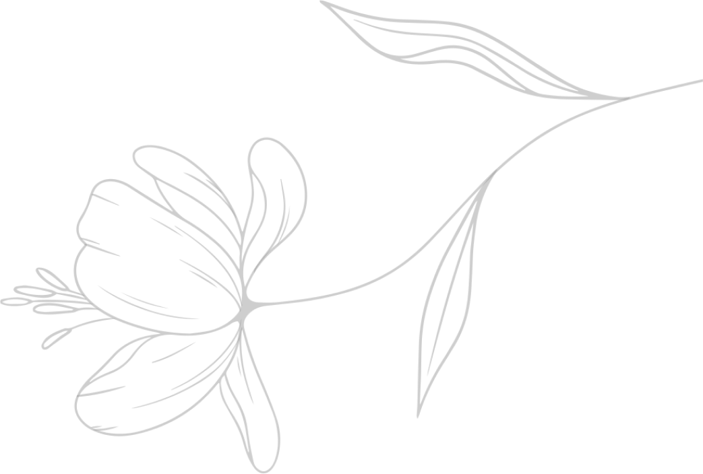

“Dan Allah menjadikan bagimu pasangan (suami atau istri)
dari jenis kamu sendiri, menjadikan anak dan cucu bagimu
dari pasanganmu, serta memberimu rezeki dari yang baik-baik.
Mengapa mereka beriman kepada yang batil dan mengingkari nikmat Allah?”
QS. An Nahl Ayat 72